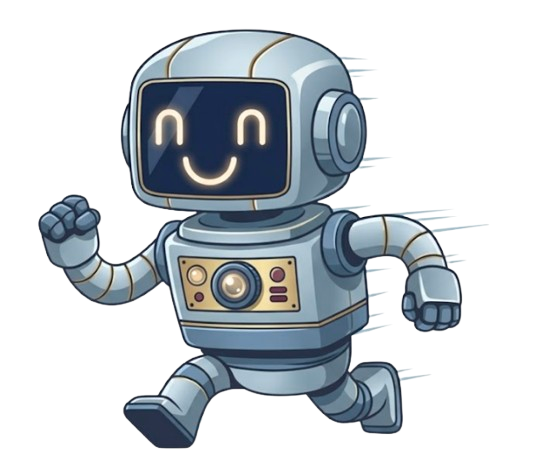
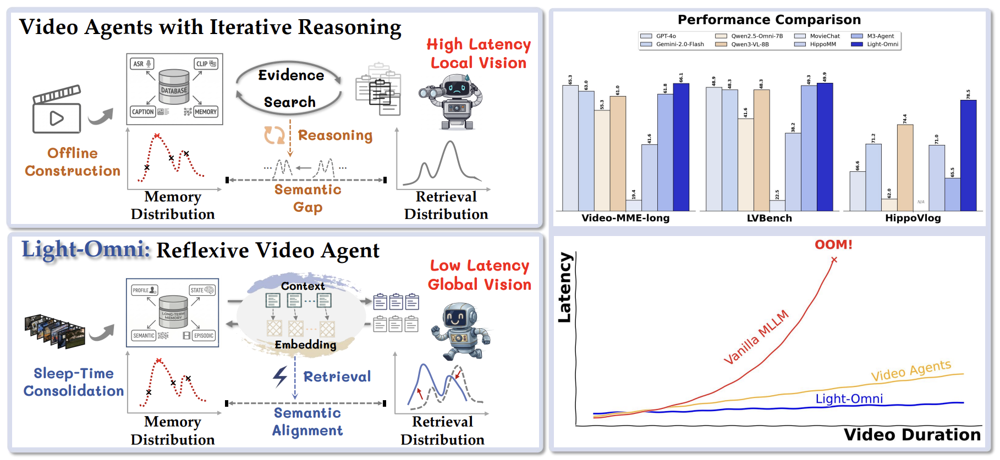
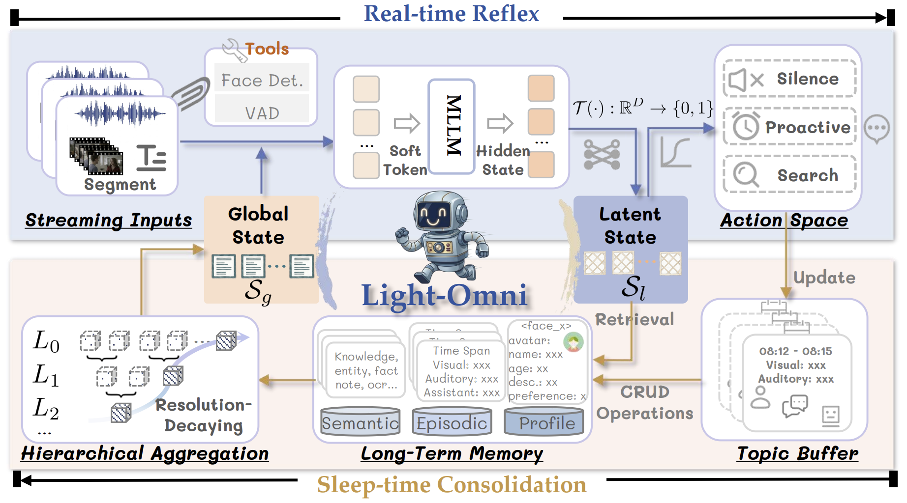
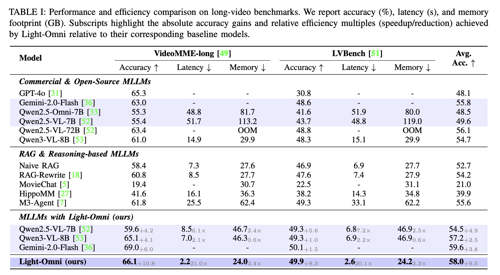

Light-OmniReflex over Reasoning in Agentic Video Understanding with Long-Term Memory
1Nanjing University
2China Mobile Research
* Corresponding authors
Introduction
Agentic video understanding equips multimodal models with long-term memory to process continuous, long-horizon streams. Existing video agents often rely on detective-style iterative reasoning for search control and evidence aggregation, which introduces high latency and computational cost.
Light-Omni reframes this process as reflexive video understanding. Instead of repeatedly planning and searching, it maintains dual contextual states that provide global context and generate semantically aligned retrieval embeddings in a single forward pass.

The Light-Omni Framework
Light-Omni builds a multimodal long-term memory system with identity profiles, semantic memory, and episodic memory. Sleep-time memory consolidation constructs a compact global state from episodic memory, preserving recent details while summarizing long-range observations.
Conditioned on this global state, Light-Omni derives a latent state that directly controls autonomous actions and produces retrieval embeddings. This coupled design narrows the semantic gap between user queries and memory distributions without explicit query rewriting or multi-step reasoning.

Results

Citation
Please cite Light-Omni if this project is useful for your research.
@inproceedings{nie2026lightomni,
title={Light-Omni: Reflex over Reasoning in Agentic Video Understanding with Long-Term Memory},
author={Nie, Chang and Wei, Jiaju and Feng, Junlan and Fu, Chaoyou and Shan,
Caifeng},
year={2026},
url={http://arxiv.org/abs/xxxx.xxxx}
}